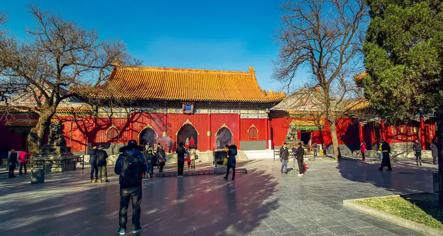
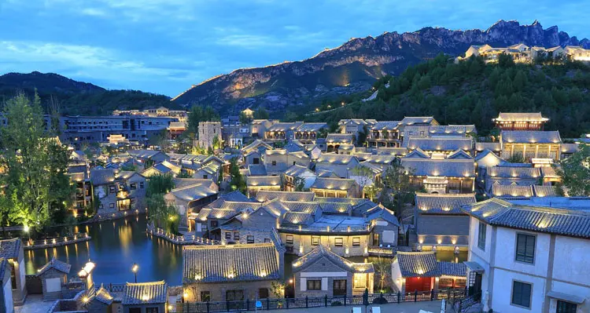
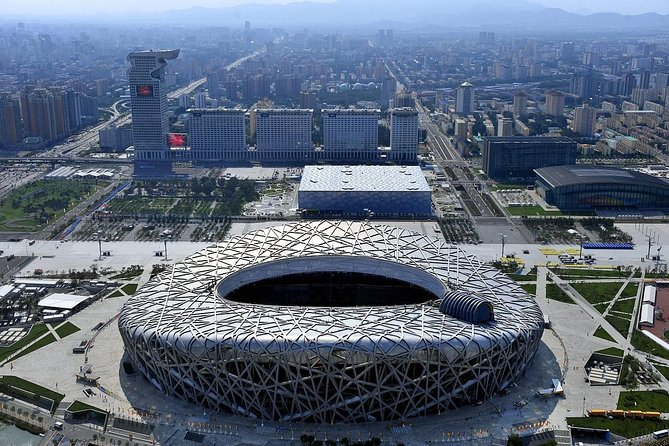
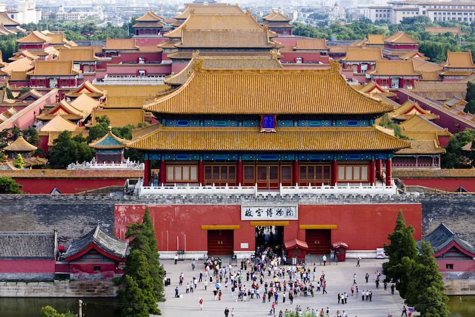

The Great Wall of China is one of the greatest sights in the world. Over 6,000 km (4,000 miles)
long, its winding path over rugged country and steep mountains takes in some great scenery.Hiking
the Great Wall is another popular way to explore the Great Wall. Tread the centuries-old bricks
and walk-through watchtower ruins. Take your time and feel history come to life.
The temple of Heaven
The Temple of Heaven is an imperial worship site where emperors of the Ming and Qing dynasties took part
in annual
ceremonies to pray for a good harvest for the next year. The annual sacrificial ceremonies at the Temple
of Heaven were the emperors' most important religious and political activities.
Nowadays, the Temple of Heaven stands in a public park that is full of life.
In the morning lots of local elderly people meet there to sing, exercise and
do tai chi. The park is south of Central Beijing

Lama Temple
This temple was formed from a royal palace conversion. Its buildings are a combination of imperial
Qing and Tibet style. While visiting, you will not only able to get a rough understanding of Tibetan
Buddhism,
but also you can appreciate wonderful architecture and a variety of Buddhist statues, especially the
18-meter
(59-foot) high Maitreya Buddha in Wanfu Pavilion. It was carved from one precious white sandalwood log
from Nepal.

Gubei Water town
This temple was formed from a royal palace conversion. Its buildings are a combination of imperial Qing
and Tibet style.
While visiting, you will not only able to get a rough understanding of Tibetan Buddhism, but also you
can appreciate
wonderful architecture and a variety of Buddhist statues, especially the 18-meter (59-foot) high
Maitreya Buddha
in Wanfu Pavilion. It was carved from one precious white sandalwood log from Nepal.
Jingsham park
The hill in the park is the highest point in Beijing City , made with the
earth removed to create the palace moat. It is well worth a climb on a clear day for a panoramic view
of the Forbidden City and Beijing. The path to the top of the hill is a little steep, and may not be
suitable for
seniors or those who have difficulty with hundreds of steps

Beijing olympic park
Beijing Olympic Park is a spacious park built for the 2008 Beijing Olympic Games. It contains
the main venues used during the 2008 Olympics and Paralympic Games, The Bird’s Nest and the Water Cube
are the outstanding
highlights of this park, which has become a landmark of Beijing.

Forbidden city
Attracting 8 million visitors annually, the Forbidden City is the world’s largest palace complex.
Situated in the heart
of Beijing near the Tiananmen Square..Surrounded by a 26-foot (8 meter) high wall with several gates, a
wide moat and royal gardens,
the complex covers a huge rectangle and consists of 90 palaces and halls with courtyards, nearly 1,000
other buildings and 8,700 rooms.
Summer palace
Once a summer retreat for emperors, this 290-acre park is still a retreat for the tourists, who can relax
here or walk
around ancient pavilions, mansions, temples, bridges and huge lake. Summer Palace mainly consists of
Longevity Hill
(Washoushan) and Kunming Lake. Much of it is covered by Kunming Lake. With masterly design and artistic
architecture
and integration the essence of Chinese garden arts, the Summer Palace has a title of "Imperial Garden
Museum"